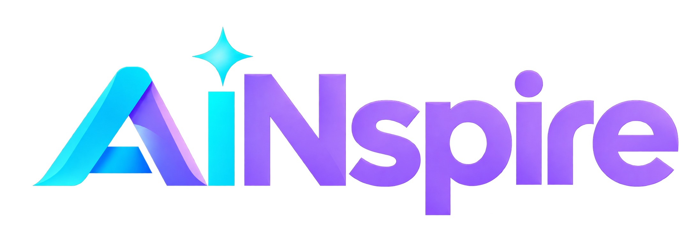

Understand AI potential
Complete AI assessment
AI persona + profile confidence

Employee Pathway
Understand your potential. Find your contribution.
Complete AI assessment
AI persona + profile confidence
Personalised learning pathway
Complete learning and record progress
View contribution role and AI projects
Show Interest
Workforce Intelligence
Observe, analyse and act on workforce evidence.
Playing · Page 1 of 2